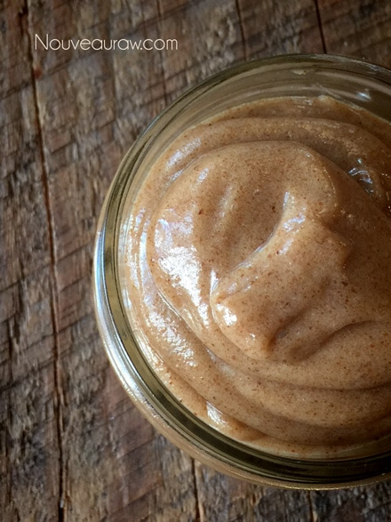

Pecan Caramel Sauce / Frosting

~ raw, vegan, gluten-free ~
Pecan Caramel Sauce as well as a frosting. Water is one of the ingredients and how much you put in will result in the desired product you are needing.
The more water you add, the more you can create a sauce that you can then drizzle on desserts. The less water you add will cause the batter to be thicker which will work more like frosting consistency.
Keep in mind that it will thicken when chilled. I used Yacon syrup and maple syrup for my sweeteners. Yacon syrup is raw, super thick, and has a maple flavor to it. But can be a tad on the spendy side, that is why I did half and half.
Use this sauce drizzled over cakes, bars, ice cream, in coffee drinks, or even add a spoonful to a smoothie. If you choose to add less water, you could use it to frost a cake or cupcakes. Enjoy!
Ingredients:
- 1/2 cup raw pecan butter
- 1/4 cup maple syrup
- 1/4 cup raw Yacon syrup
- 1/2 cup date paste
- 2 tsp vanilla extract
- 1/8 tsp Himalayan pink salt
- 1/4 cup of water (may need more or less, do you want to drizzle or use as a frosting?)

Preparation:
- Place pecan butter, maple syrup, Yacon syrup, date paste, vanilla, salt, and water in a high-powered blender. Process until smooth. You may need to stop occasionally to scrape the sides down.
- I don’t recommend using a food processor for this recipe. It won’t get smooth and creamy.
- Store leftover sauce in the fridge in a glass container for up to 2 weeks.
- To soften, leave it out at room temperature for a few hours or place the container in a bowl of hot water.
- Sometimes I store it in a squeeze bottle making it nice and easy to put on any treat…it’s amazing on raw ice cream! Or in your coffee…better just tilt your head back and squeeze it into your mouth! haha
© AmieSue.com